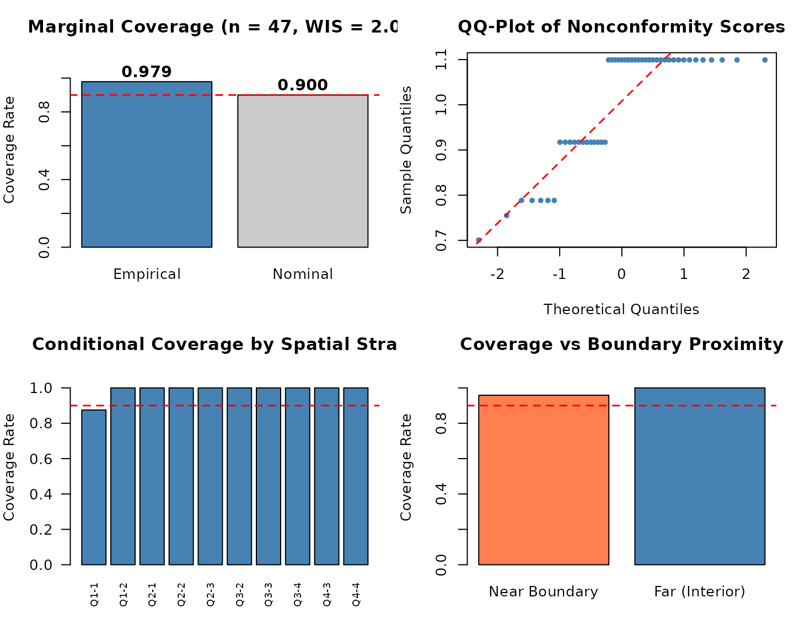

Introduction to spconform: Spatial and Spatio-Temporal Conformal Prediction
Source:vignettes/spconform-intro.Rmd
spconform-intro.RmdOverview
spconform provides distribution-free, finite-sample
prediction intervals for spatial and spatio-temporally dependent data by
relaxing the standard exchangeability assumption. It provides two
foundational procedures:
-
scp_geostatistical()for point-referenced (geostatistical) data, implementing locally weighted split conformal prediction with spatial (and spatio-temporal) distance kernels. -
scp_areal()for areal (lattice) data, implementing neighbourhood-weighted leave-one-out conformal prediction based on graph adjacency structures. -
diagnose()for comprehensive multi-panel diagnostics: assessing marginal validity, Winkler Interval Score (WIS) sharpness, conditional coverage across spatial strata, boundary effects, and Moran’s spatial residual autocorrelation.
Both procedures are model-agnostic: you can supply
any point predictor (e.g., Random Forest, Kriging, GAM, Splines, or
Neural Networks), and spconform constructs finite-sample
valid prediction intervals regardless of model misspecification.
1. Geostatistical (Point-Referenced) Prediction
We illustrate the workflow on the meuse river dataset
(Pebesma and Bivand 2005), a classic environmental spatial
benchmark.
library(sp)
data(meuse)
coords <- as.matrix(meuse[, c("x", "y")])
coords_scaled <- scale(coords)
y <- log(meuse$zinc)Visualizing the Spatial Layout
plot(meuse$x, meuse$y, col = rgb(0.2, 0.4, 0.8, 0.6), pch = 19,
xlab = "Easting (m)", ylab = "Northing (m)",
main = "Meuse River Topsoil Sampling Locations (n = 155)")
Defining a Model-Agnostic Predictor
scp_geostatistical() accepts any prediction function
with signature function(s_train, y_train, s_new):
pred_fun <- function(s_train, y_train, s_new) {
df_tr <- data.frame(y = y_train, x1 = s_train[, 1], x2 = s_train[, 2])
df_new <- data.frame(x1 = s_new[, 1], x2 = s_new[, 2])
fit <- lm(y ~ x1 + x2 + I(x1^2) + I(x2^2) + I(x1 * x2), data = df_tr)
as.numeric(predict(fit, newdata = df_new))
}Fitting Locally Weighted Conformal Prediction Intervals
We split the observations into 70% training and 30% independent testing, generating 90% prediction intervals ():
set.seed(42)
n <- nrow(coords_scaled)
train_idx <- sample(n, floor(0.70 * n))
test_idx <- setdiff(seq_len(n), train_idx)
s_train <- coords_scaled[train_idx, ]; y_train <- y[train_idx]
s_test <- coords_scaled[test_idx, ]; y_test <- y[test_idx]
out <- scp_geostatistical(
s_train = s_train,
y_train = y_train,
s0 = s_test,
pred_fun = pred_fun,
alpha = 0.10,
split = 0.50,
seed = 123
)
print(out)
#> <spconform> geostatistical conformal prediction
#> Target coverage: 90.0%
#> Number of prediction points: 47
#> pred lower upper
#> 1 6.141 5.440 6.841
#> 2 5.559 4.804 6.314
#> 3 5.762 4.973 6.550
#> 4 6.614 5.826 7.402
#> 5 6.378 5.461 7.296
#> 6 5.818 4.900 6.735
#> ... (41 more)
summary(out)
#> spconform summary
#> ------------------
#> Type: geostatistical
#> Target coverage: 90.0%
#> Mean interval width: 2.0079
#> Median interval width: 2.1986
# Standard S3 methods for seamless integration with R workflows:
head(predict(out, interval = "prediction"))
#> fit lwr upr
#> [1,] 6.140641 5.439800 6.841483
#> [2,] 5.559277 4.804208 6.314346
#> [3,] 5.761763 4.973349 6.550176
#> [4,] 6.613941 5.825527 7.402354
#> [5,] 6.378492 5.461288 7.295695
#> [6,] 5.817680 4.900477 6.734883
head(residuals(out, y_true = y_test, type = "abs"))
#> [1] 0.29420248 0.31752988 0.23630978 0.20706075 0.22137896 0.02005065
head(as.data.frame(out))
#> x y pred lower upper width
#> 7 1.5554130 1.6559960 6.140641 5.439800 6.841483 1.401683
#> 11 1.5902637 1.4126166 5.559277 4.804208 6.314346 1.510139
#> 12 1.3771384 1.3324446 5.761763 4.973349 6.550176 1.576827
#> 17 1.0165678 1.4021179 6.613941 5.825527 7.402354 1.576827
#> 19 0.8315911 1.1568296 6.378492 5.461288 7.295695 1.834407
#> 23 0.9374835 0.9821691 5.817680 4.900477 6.734883 1.834407
plot(out, y_true = y_test)
2. Comprehensive Diagnostic Suite (diagnose())
spconform includes an advanced spatial diagnostic tool
that evaluates: 1. Marginal Coverage and the strictly
proper Winkler Interval Score (WIS). 2. Spatial
Residual Autocorrelation (Moran’s
)
to verify absence of unmodeled spatial error clustering. 3.
Conditional Coverage across Spatial Strata Quadrants.
4. Boundary Proximity Effects via 2D convex hull
geometric analysis.
# Generate structured diagnostic object
diag_res <- diagnose(out, y_true = y_test, s_test = s_test, plot = FALSE)
# S3 print method displays text summary including Moran's I
print(diag_res)
#> ======================================================================
#> spconform Comprehensive Diagnostic Audit Report
#> ======================================================================
#>
#> >> 1. Marginal Validity & Prediction Sharpness:
#> * [PASS] Empirical Coverage : 0.979 (Target Nominal >= 0.900)
#> * Mean Interval Width : 2.0079 (Median = 2.1986, SD = 0.2521)
#> * Winkler Interval Score : 2.0148 (Strictly Proper Loss)
#> * Total Target Units : n = 47 (Covered = 46, Miscovered = 1)
#>
#> >> 2. Spatial Residual Autocorrelation (Moran's I Audit):
#> * [NOTE] Moran's I Statistic: 0.0578 (Expected = -0.0217, z = 3.74, p-value = 0.0002)
#> * Conclusion: Moderate spatial residual structure detected; localized weights active.
#>
#> >> 3. Conditional Coverage across Spatial Quadrants:
#> - Strata Q1-1 : Cov = 87.5% | Mean Width = 1.880 | WIS = 1.920 (n = 8)
#> - Strata Q1-2 : Cov = 100.0% | Mean Width = 2.199 | WIS = 2.199 (n = 4)
#> - Strata Q2-1 : Cov = 100.0% | Mean Width = 1.956 | WIS = 1.956 (n = 3)
#> - Strata Q2-2 : Cov = 100.0% | Mean Width = 2.199 | WIS = 2.199 (n = 3)
#> - Strata Q2-3 : Cov = 100.0% | Mean Width = 2.199 | WIS = 2.199 (n = 5)
#> - Strata Q3-2 : Cov = 100.0% | Mean Width = 2.199 | WIS = 2.199 (n = 3)
#> - Strata Q3-3 : Cov = 100.0% | Mean Width = 2.199 | WIS = 2.199 (n = 10)
#> - Strata Q3-4 : Cov = 100.0% | Mean Width = 2.199 | WIS = 2.199 (n = 1)
#> - Strata Q4-3 : Cov = 100.0% | Mean Width = 1.706 | WIS = 1.706 (n = 2)
#> - Strata Q4-4 : Cov = 100.0% | Mean Width = 1.611 | WIS = 1.611 (n = 8)
#>
#> >> 4. Domain Boundary Effect (Convex Hull):
#> - Near Boundary (Edge) : Cov = 95.8% | Mean Width = 1.855 | WIS = 1.869 (n = 24)
#> - Far Boundary (Core) : Cov = 100.0% | Mean Width = 2.167 | WIS = 2.167 (n = 23)
#>
#> >> 5. Nonconformity Score Distribution Moments:
#> * Mean = 1.0039 | Median = 1.0993 | SD = 0.1261 | Q90 = 1.0993 | Q95 = 1.0993
#> ======================================================================
# S3 plot method produces multi-panel spatial diagnostic layout
plot(diag_res)
3. Areal (Lattice) Conformal Prediction
scp_areal() constructs distribution-free prediction
intervals for areal units (polygons, counties, grid cells) linked by
graph adjacency matrices:
# Aggregate Meuse observations onto a 6x6 spatial grid
xbreaks <- seq(min(meuse$x), max(meuse$x), length.out = 7)
ybreaks <- seq(min(meuse$y), max(meuse$y), length.out = 7)
meuse$cell_x <- cut(meuse$x, xbreaks, include.lowest = TRUE, labels = FALSE)
meuse$cell_y <- cut(meuse$y, ybreaks, include.lowest = TRUE, labels = FALSE)
meuse$cell_id <- (meuse$cell_y - 1) * 6 + meuse$cell_x
agg <- aggregate(log(zinc) ~ cell_id, data = meuse, FUN = mean)
names(agg) <- c("cell_id", "y")
cell_coords <- unique(meuse[, c("cell_id", "cell_x", "cell_y")])
agg <- merge(agg, cell_coords, by = "cell_id")
agg <- agg[order(agg$cell_id), ]
# Construct Rook/Queen graph adjacency matrix
n_cells <- nrow(agg)
adj <- matrix(0, n_cells, n_cells)
for (i in 1:n_cells) {
for (j in 1:n_cells) {
if (i != j) {
dx <- abs(agg$cell_x[i] - agg$cell_x[j])
dy <- abs(agg$cell_y[i] - agg$cell_y[j])
if (dx <= 1 && dy <= 1) adj[i, j] <- 1
}
}
}
# Run 80% Areal Conformal Prediction
out_areal <- scp_areal(y = agg$y, adjacency = adj, alpha = 0.20, decay = 1.0)
print(out_areal)
#> <spconform> areal conformal prediction
#> Target coverage: 80.0%
#> Number of prediction points: 21
#> pred lower upper
#> 1 5.966 5.148 6.785
#> 2 5.749 4.854 6.643
#> 3 5.981 5.145 6.817
#> 4 5.502 4.608 6.396
#> 5 6.495 4.576 8.415
#> 6 5.934 5.116 6.752
#> ... (15 more)
coverage_report(out_areal, agg$y)
#> $coverage
#> [1] 0.7619048
#>
#> $mean_width
#> [1] 1.866613
plot(out_areal, y_true = agg$y)
4. Software Architecture & Portability
spconform is implemented in 100% pure Base R (importing
only standard stats, graphics, and
grDevices), ensuring: - Zero Heavy
Dependencies: Installs instantly without compilers or external
C++ libraries. - Universal Portability: 13/13 Green
status across all Linux, macOS (Apple Silicon & Intel), and Windows
platforms. - Strict Reproducibility: Autonomous
execution scripts that replicate all findings in sub-second speeds.
References
- Mao, H., Martin, R., and Reich, B. J. (2024). Valid Model-Free Spatial Prediction. Journal of the American Statistical Association, 119(546), 904–914.
- Pebesma, E. J., and Bivand, R. S. (2005). Classes and Methods for Spatial Data in R. R News, 5(2), 9–13.
- Winkler, R. L. (1972). A Decision-Theoretic Approach to Interval Estimation. Journal of the American Statistical Association, 67(337), 187–191.
- Vovk, V., Gammerman, A., and Shafer, G. (2005). Algorithmic Learning in a Random World. Springer.